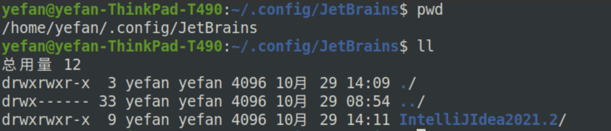
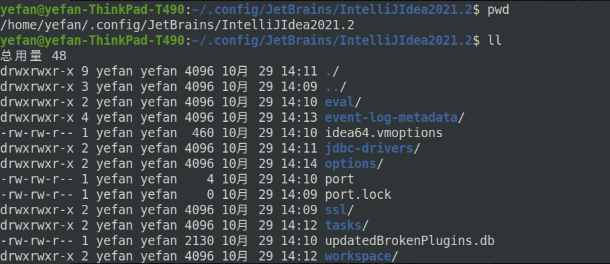
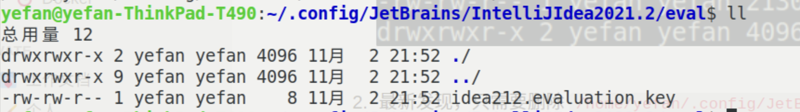
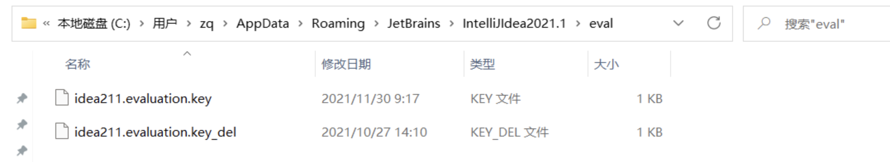

各系统下无限重置IDEA试用版本
在Ubuntu（linux）下重置
先说一下原理，在2021.2.3版本之前，我们本机使用IDEA是不需要登录什么账户的，因此IDEA无法讲试用时间的限制放在云端，也就是说，IDEA的试用时间的限制数据是放在我们本地的，只需要找到IDEA存放在我们本地的时间限制数据，并删掉就可以重置试用时间；下面就开始吧。
第一步，我们需要找到IDEA 的数据存放在哪儿
经过一番寻找，终于到找了，数据目录在我们用户目录下的 .config/JetBrains/ 目录下：

由于没办法区分那些文件是用来存放时间限制的，我们可以一把全部删掉，相当于重新安装
最新发现，只需要删除
/home/yefan/.config/JetBrains/IntelliJIdea2021.2/eval目录下的文件即可
删除后再重启IDEA，就可以发现IDEA跟新安装一样
evaluation.key
- 到这里就完成了重置
这种方式同样适用于所有 JetBrains 的其他产品，但是要求版本是在 2021.2 版本以前
在windows下重置
路径如下：
C:\Users\zq\AppData\Roaming\JetBrains\IntelliJIdea2021.1\eval

把.key的文件 重命名为其他的名字就可以重新选择试用
如果无法找到路径，可以在 C盘根目录下进行使用搜索，关键词为：evaluation.key
在Mac 下重置
脚本如下：
1 |
|
本博客所有文章除特别声明外，均采用 CC BY-NC-SA 4.0 许可协议。转载请注明来自 叶凡！